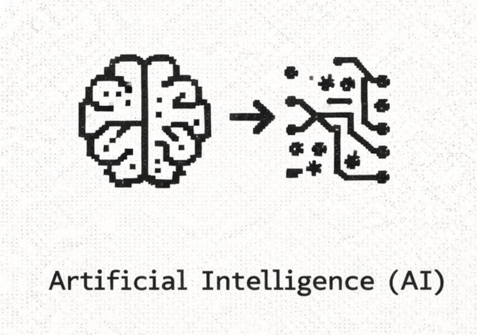
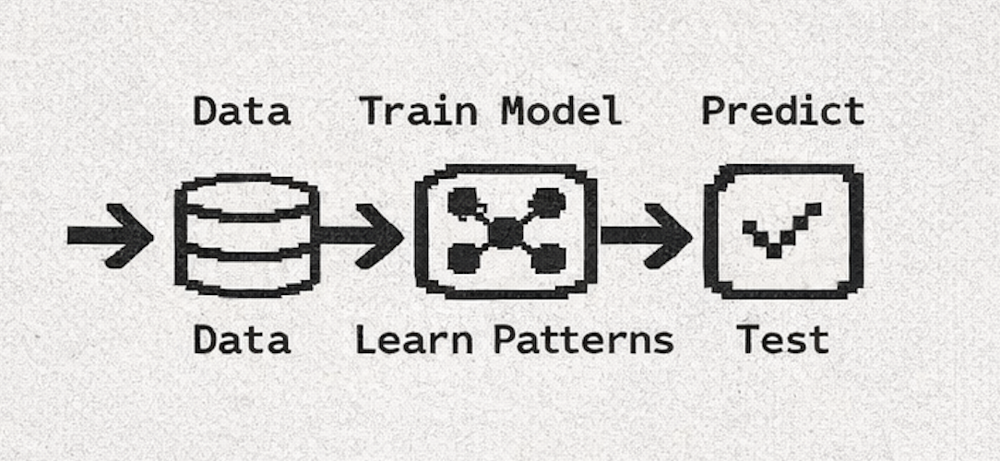
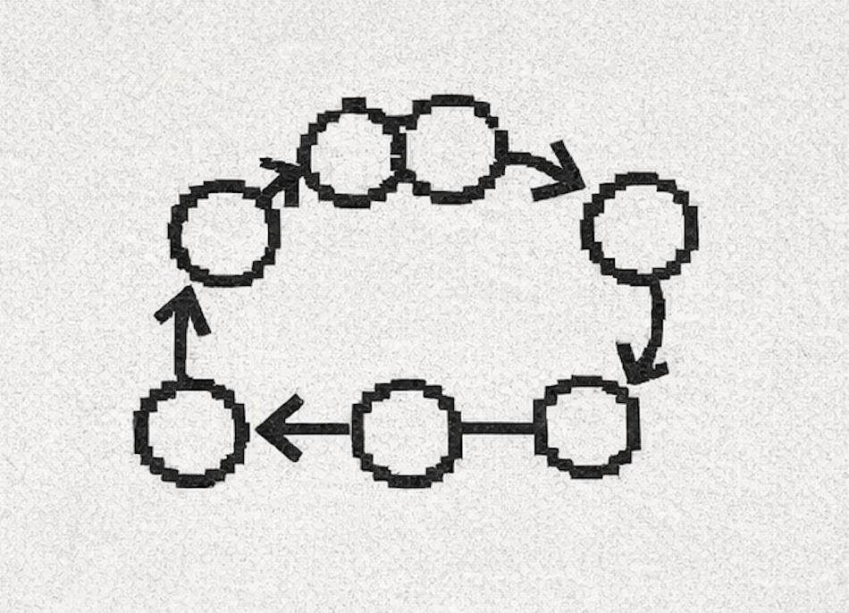
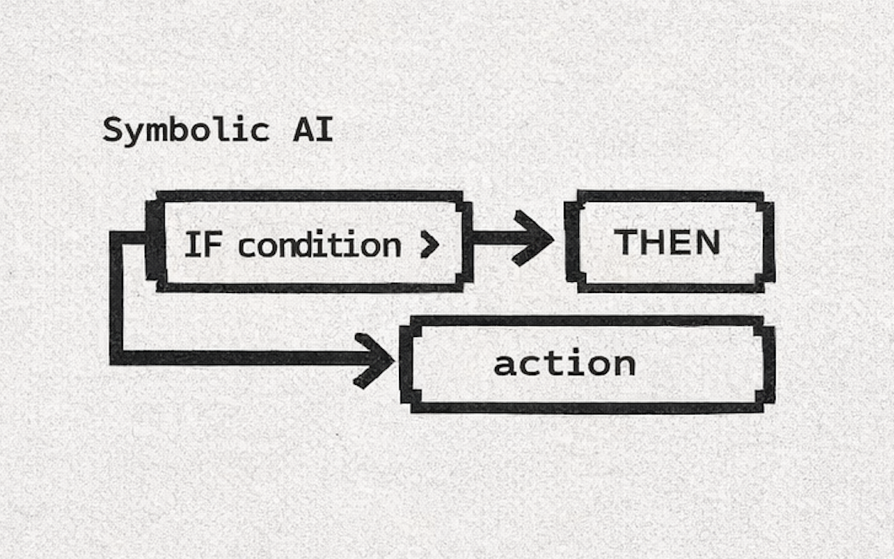
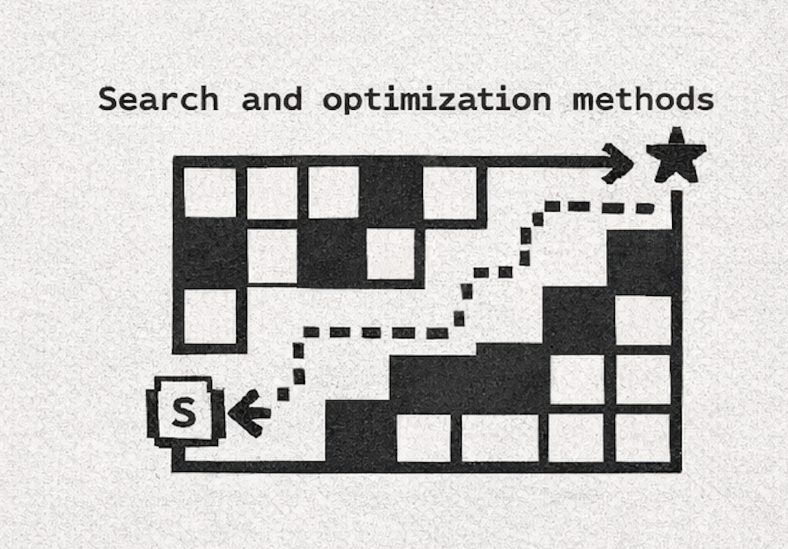
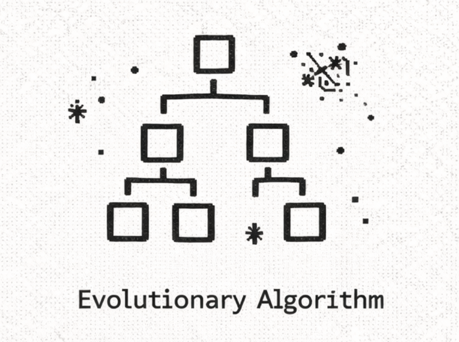
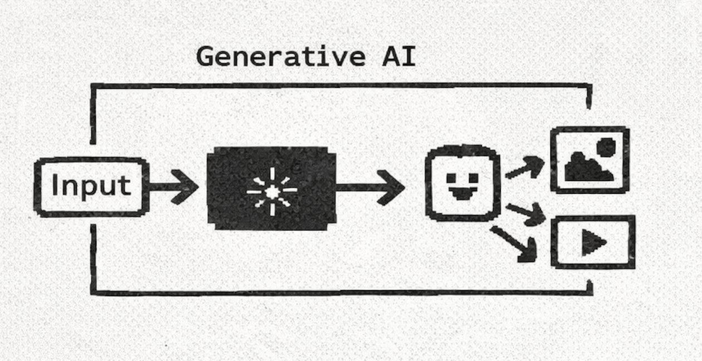

AI & You Decide
Tiri Kananuruk
April 13, 2026
Yale IDD Workshop
Agenda
- What is AI
- What is ML
- Alternative Approaches to AI
- Introduction to Generative AI
- Current Tools & Products (I'm trying my best)
- Critical Perspectives
- Winners-Take-All
- No speculative
- But why I still need to learn how to code
- Supporting Perspectives
- Yale Tools
- Op out trainning data
- How I set up in studio
- Vibe Coding VS Spec coding
- How I see people use it
- Discussion
AI
Artificial Intelligence (AI)
is the broad goal of building systems that perform tasks requiring intelligence.
Machine Learning (ML) is one way to build AI, where systems learn patterns from data.
- ML is dominant today, especially for images, language, and audio, but it is not the only path to AI.
- Alternative paradigms include rule-based reasoning, explicit knowledge systems, search methods, and evolutionary approaches. These can be useful when control, transparency, or low-data design matters.
ML
Data -> Train Model -> Learn Patterns -> Test -> Predict

Non-ML Approaches to AI
Probabilistic / pre-ML generative systems

Symbolic AI (rule-based systems)
- AI built from explicit rules and symbols instead of statistical learning.
- How it works: designers write logic such as IF condition > THEN action. The system reasons over defined facts and rules.
- Creative example: a generative poetry tool that enforces rhyme, meter, and grammar rules to produce constrained outputs.

Expert systems
- Systems that encode specialist knowledge to make decisions in a narrow domain.
- How it works: a knowledge base (facts) plus an inference engine (reasoning rules) produces recommendations.
- Creative example: a color-grading assistant that applies cinematography best practices based on scene conditions.
Search and optimization methods

- AI finds good solutions by exploring many possible options and scoring them.
- How it works: algorithms search a space of possibilities using constraints, objectives, and heuristics (for example A* or constraint solving).
- Creative example: layout generation that optimizes readability, balance, and accessibility constraints for posters or interfaces.
Evolutionary algorithms

- AI inspired by natural selection, where candidate solutions evolve over generations.
- How it works: create many variants, score fitness, keep better candidates, then mutate/recombine to produce new ones.
- Creative example: evolving abstract visual forms or type compositions where the artist curates each generation.
Introduction to Generative AI
- What is generative AI?
- Generative AI is a type of artificial intelligence that can create new content instead of just analyzing or predicting.
- Systems that create new content such as text, images, audio, video, or code based on patterns learned from large datasets.
- How it works (high-level): models learn to predict what comes next (word, pixel pattern, frame). Prompts then guide generation toward your intent.

Current Tools & Products (updated April 12, 2026)
Yale AI tools and resources:
https://ai.yale.edu/yales-ai-tools-and-resources
I would recommend using Clarity Platform:
https://ai.yale.edu/yales-ai-tools-and-resources/clarity-platform
Clarity is appropriate for use with low, medium, and most high-risk data, with the notable restriction of Electronic Protected Health Information (ePHI). Users with external obligations like data use agreements should also make sure their use of Clarity is appropriate. For further details, see Clarity Platform Security and Health Sciences AI Toolkit for ePHI information.
Text and ideation
ChatGPT, Claude, Gemini, Notion AI, DeepSeek, Qwen, Mistral, h2oGPT, Jan.ai, LM Studio, Ollama, Perplexity, Gemma 4, Kimi, Hunter Alpha, MiniMax
Image
Midjourney, Adobe Firefly, DALL-E, Stable Diffusion, Leonardo, ComfyUI, InvokeAI, Fooocus, Kandinsky, Playground AI, Nano Banana 2, Flux.1, Ideogram 2.0, Recraft
Video
Runway, Pika, Luma Dream Machine, Adobe AI, ModelScope, CogVideo, LTX Video, Sora, Veo, Kling, Hailuo, HeyGen, Synthesia
Code and creative prototyping
GitHub Copilot, Cursor, Replit AI, CodeGeeX, Tabby, Continue, OpenDevin, Flowise, Stitch, Windsurf, Bolt.new, v0, Lovable, Claude Code, Mars.ai
Audio
Suno, Udio, ElevenLabs, Adobe Podcast, Coqui, Bark, XTTS, RVC, Lyria 3, Kyutai Moshi, Hume AI, Mubert, AIVA
Winner-Take-All Dynamics
Choice does not disappear loudly, it narrows into defaults.
Search Engine VS One Absolute Answer
- everyone using the same image model > same aesthetics
- same coding assistants > similar structures
- same datasets > same biases
Exercise
- Draw Exercise.
- Draw a portrait of one of the following options using P5js: mouse, frog, dog, cat, crocodile, whale, grasshopper, duck, cow and bear
- OPTIONAL: make at least one element of the portrait an interactive variable.
- Compare outputs across 2 tools
Questions
- Where in your current process are you relying on defaults?
- Which creative decisions are genuinely yours vs suggested by the tool?
- What would a diversified tool stack look like for your studio?
Speculative is slowly gone
I have answer to everything
- AI collapses uncertainty too quickly
- reduces open-ended exploration
- replaces speculation with immediate resolution
When everything returns an answer instantly, the space for speculation shrinks. The question is whether we still leave room for not knowing, or if we move too quickly into resolution.
Practical limitations (how it fails)
- Confidently wrong answers
- Weak sense of truth vs plausibility
- Poor long-term consistency
Other Critiques
- Ethics and consent concerns around training data.
- Scale > requires massive compute, Water+ Power use
- Copyright and authorship questions remain unresolved.
- Potential impact on creative labor, rates, and expectations.
- Bias, inaccuracies, and aesthetic homogenization.
- Opt-out training data
On the bright side
- Do the task you don't want to do
- Yale Tools
Experiment Thoughts / How to work with it
- Knowing what is possible vs impossible
- Computational thinking
- Vibe Coding VS Spec coding
Extra
What I always find it helpful is seeing how other people use it/set it in their own workflow
- How I set in the studio
- Terminal coding - set up
- Spec code
- OpenClaw for task we don't like
- How I see people use it
- Discussion time!
Claude Code Terminal installation Step by Step
curl -fsSL https://claude.ai/install.sh | bash
More step
References, Further Reading, and Bibliography
- Russell and Norvig, Artificial Intelligence: A Modern
Approach (symbolic, search, and ML foundations)
- IBM: What are expert systems?
- MIT OpenCourseWare: Introduction to Algorithms and search
methods
- Nature Machine Intelligence and policy discussions
on foundation model concentration
- OECD AI policy observatory
- Critical perspective: Ruha Benjamin,
Race After Technology
- Critical perspective:
Safiya Noble, Algorithms of Oppression
- US Copyright Office: AI and Copyright
- OECD (2024): AI, data, and
market concentration
- Huang, Tuan-Ting, Janet Yi-Ching Huang, and Stephan
Wensveen. 2026. Workmanship of Learning: Embedding Craftsmanship Values in AI-Integrated Educational Tools.
arXiv.
- Crawford, Kate. 2021. Atlas of AI: Power, Politics,
and the Planetary Costs of Artificial Intelligence.
- McKinsey: The economic potential of generative AI
- John Maeda. (2026). Design in Tech Report
SXSW 2026: UX to AX [Video]. YouTube.
- Goodspeed, Elizabeth. 2024. "Taste and Technology." It's Nice That. February 28, 2024.
- Chimero, Frank. 2025. "Beyond the Machine."